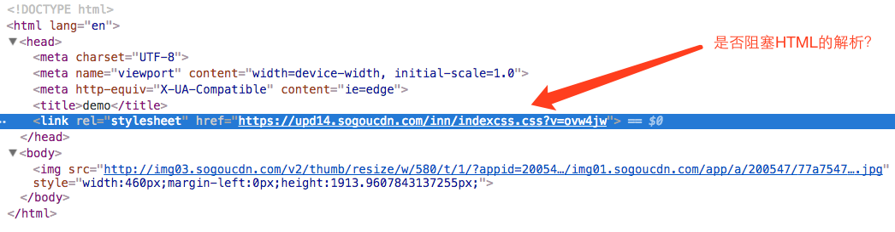
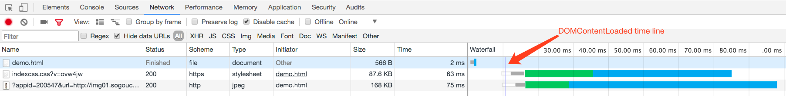
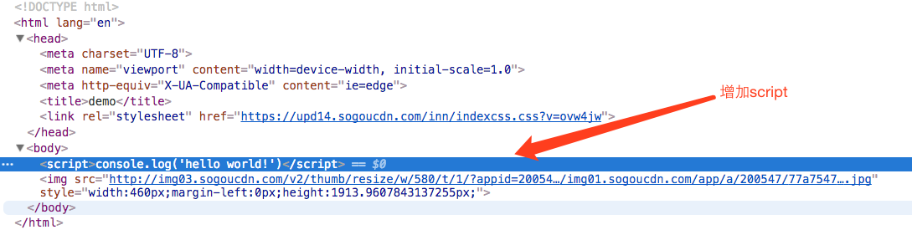
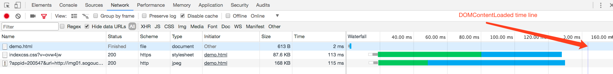
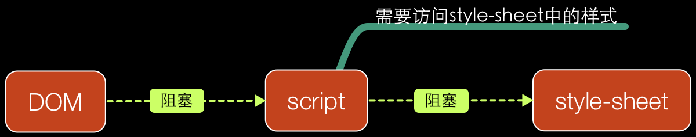
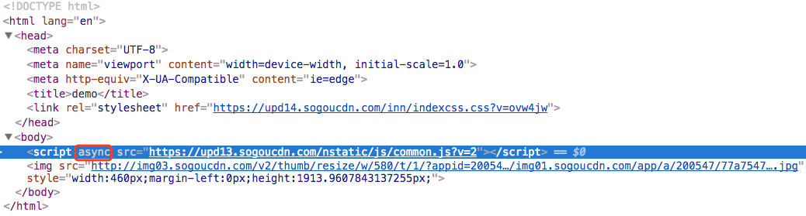
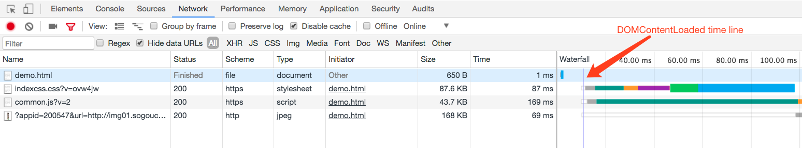
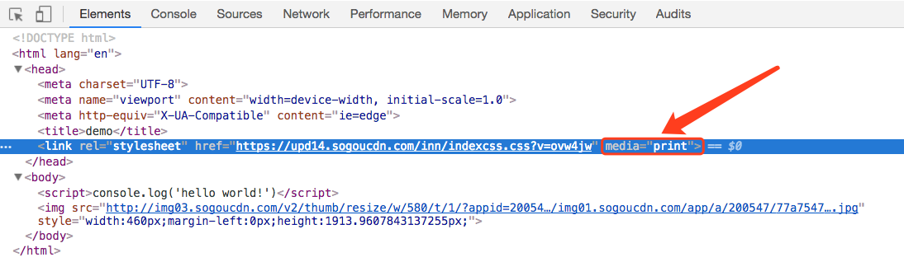
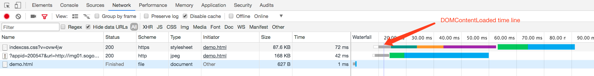

关于external-style-sheets你不知道的事
在讲解之前，先看一个问题。如下图所示，外部样式表是否阻塞HTML解析（先不要看答案，可以自己思考和实验一下）：

通过DevTool->network:

如上图所示，indexcss.css并没有阻塞HTML解析，因为DOMContentLoaded时间线在indexcss.css之后。但如果在
indexcss.css之后添加script标签（不能为空），结果会一样？

通过DevTool->network:

如上图所示，在indexcss.css之后添加script标签(不能为空)后，此时DOMContentLoaded时间线位于indexcss.css之后。说明这里indexcss.css是阻塞HTML解析的。
参考相关资料，找到如下描述：
Style sheets on the other hand have a different model. Conceptually it seems that since style sheets don’t change the DOM tree, there is no reason to wait for them and stop the document parsing. There is an issue, though, of scripts asking for style information during the document parsing stage. If the style is not loaded and parsed yet, the script will get wrong answers and apparently this caused lots of problems. It seems to be an edge case but is quite common. Firefox blocks all scripts when there is a style sheet that is still being loaded and parsed. WebKit blocks scripts only when they try to access certain style properties that may be affected by unloaded style sheets.—-Tali Garsiel
大概意思是：style-sheets不会修改DOM树，没有理由为了解析style-sheets而阻塞文档解析（即style-sheets不会阻塞文档解析）。但如果在解析文档过程中有脚本需要访问样式信息时，为了保证访问样式信息的正确性。Firefox会阻塞所有脚本直到style-sheets下载解析完为止。而WebKit只在脚本访问的样式属性没有被加载解析时，才会阻塞脚本。

也即style-sheet不会直接阻塞文档解析，它只阻塞script的解析执行，才导致style-sheet间接阻塞文档解析。如果将script设置为非阻塞式的呢？可以通过为script标签设置aysnc特性来实现。为啥不用defer?
Both async and defer scripts begin to download immediately without pausing the parser and both support an optional onload handler to address the common need to perform initialization which depends on the script. The difference between async and defer centers around when the script is executed. Each async script executes at the first opportunity after it is finished downloading and before the window’s load event. This means it’s possible (and likely) that async scripts are not executed in the order in which they occur in the page. The defer scripts, on the other hand, are guaranteed to be executed in the order they occur in the page. That execution starts after parsing is completely finished, but before the document’s DOMContentLoaded event.
大概意思：async和defer特性在脚本开始下载时，都不会阻塞文档解析。并且都支持onload事件回调处理，用于一些初始化工作。另外，对内联脚本都无效，脚本中不能调用document.write()。不同之处：带有async特性的脚本会在脚本下载完后立即执行，且在load事件之前，所以不能确保脚本在文档中出现的顺序来执行。而带有defer特性的脚本会在文档解析完后按照在文档出现的顺序依次执行，且在DOMContentLoaded事件之前。
因此，这里设置async特性，而不设置defer特性。为了尽早地触发DOMContentLoaded事件，因为defer会延迟DOMContentLoaded事件触发。
为script标签添加async特性:

通过DevTool->network:

当然，这里可以通过媒体查询media让style-sheet异步加载：

通过DevTool->network:

总结：
- style-sheet默认情况下是不会阻塞文档解析的。
- style-sheet只会阻塞script脚本解析执行。因为需要script脚本需要访问style-sheet样式信息，为了确保样式信息的正确性，script脚本需要等待style-sheet下载解析完。从而导致style-sheet间接阻塞文档解析。
- style-sheet可以通过媒体查询media来实现异步加载。
- 为script设置aysnc特性来实现异步加载，来加快文档解析。
参考文章：
- 分析关键渲染路径性能
- Deciphering the Critical Rendering Path
- How Browsers Work: Behind the scenes of modern web browsers
声明:本资料仅供学习交流，严禁使用于任何商业用途! 如需转载，转载请注明出处。